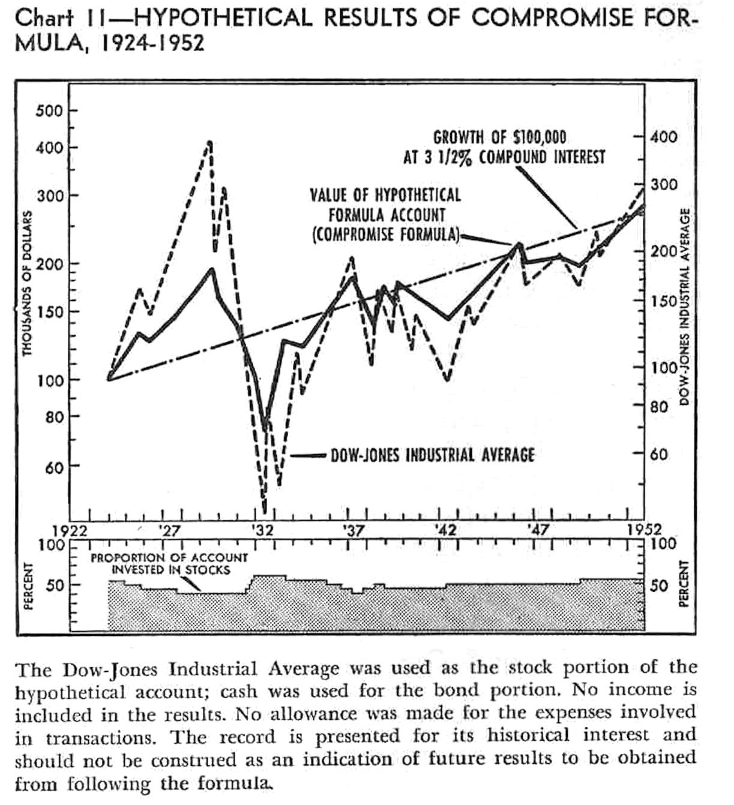

"The record is presented for its historical interest and should not be construed as an indication of future results to be obtained from following the formula."
Minimum investment returns are of primary importance to funding retirement expenses from an investment portfolio. Prolonged periods of low yields have at times had severe effects on minimum 20-year returns. Is there a strategy that can mitigate weak medium-term returns more effectively than fixed-percentage stock allocations?
Benjamin Graham allowed for fluctuation in the proportion of a portfolio invested in common stock. Considering his "Margin of Safety" principle for stock purchases and its complement for stock sales, one might adjust the stock percentage of the portfolio based on both the stock earnings yield and the current yield for bonds, facilitating capital appreciation by avoiding trading until the present yield of the purchased security is substantially greater than that of the sold security. It may be wise to add a hedge against stock prices in excess of historically sustainable levels.
For 20-year intervals since 1911, when allocating between 10-year US Treasury bonds and the S&P 500 index, a simple formula implementing such a "Yield-Based Asset Ratio" hypothetically would have had a minimum compound annual growth rate (CAGR) of +1.96%, considerably higher than would have been observed for 6%, 60%, and 85% stock allocations (CAGR -2.33%, -0.41%, and +0.09%, respectively). Results suggest that a fixed-percentage stock allocation may not offer the best protection of investment returns and principal for interval lengths of 11 or more years.
(A Google spreadsheet for testing this formula is available.)
A retirement may last forty years or more; funding it requires a decumulation strategy that both supports ongoing spending and resists market downturns. Although returns from aggressive investments may offer modest opportunities to increase funding for longer-term expenses, incurring losses at unfavorable times when funding near-term spending from the retirement portfolio may threaten principal that is earmarked to generate income in the distant future [12]. In the near term, minimally volatile assets, insurance products (e.g., annuities), or buffer assets (e.g., home equity conversion mortgages) may be the retiree's best recourse to mitigate the risk that "market underperformance" poses to funding retirement successfully [12]. Volatile assets can only be wisely dedicated to funding intermediate-term and long-term spending needs, but one must decide how to allocate investments among volatile assets.
Current conventional wisdom posits that a fixed-percentage stock allocation can provide a balance between risk of loss and returns that is fair-to-good (depending on the percentage chosen), but how reliable is that balance in the intermediate term, e.g., over 20 years? Historically, during protracted intervals when stock yields were generally low, fixed-percentage stock allocations neither buffered stock-market price declines dramatically nor provided income efficiently. Total real returns for the S&P 500 ("GSPC") were painfully low over 20 year intervals starting in 1912, 1929, and 1961, and they were barely competitive with bonds over 1988–2008. One may argue that September 1961 started the worst 20-year interval since 1911 because, between 1969 and 1981, real returns from both GSPC and 10-year US Treasury bonds ("TNX" or "GS10") were so minimal that GSPC had real growth of only 7% over the entire twenty years starting March of 1962 (compound annual growth rate, "CAGR": 0.34%), while TNX lost 33% of its value (CAGR: –1.98%); fixed percentage portfolios would have performed between these rates.
Here is presented an "investment formula" (i.e., a decision rule):
With respect to minimum returns for an intermediate term time horizon (20 years), the performance of the Yield-Based Asset Ratio ("YBAR") compares favorably to allocation methods specifying a fixed percentage of stock in a portfolio, as shown in the first figure:
In the following table, local minima in 20-year returns from the YBAR (shown in the previous figure) are expressed as CAGR and compared to fixed percentage allocations:
| Strategy | May 1912– May 1932 |
August 1929– August 1949 |
August 1961– August 1981 |
October 1988– October 2008 |
September 1998– September 2018 |
Overall Minimum 1911–2022 |
|---|---|---|---|---|---|---|
| YBAR | 2.07% | 2.78% | 1.96% | 5.05% | 5.74% | 1.96% |
| 60% stock | 1.81% | 1.53% | –0.32% | 5.48% | 3.35% | –0.41% |
| 6% stock | 2.58% | 1.59% | –2.33% | 5.14% | 2.27% | –2.33% |
| 85% stock | 1.14% | 0.93% | 0.46% | 5.43% | 3.60% | 0.09% |
Calculator available
If you want a quick peek at the results of this formula, you can try the calculator page here without making a copy of the Google spreadsheet described next.
Spreadsheet available: Experiment with the formula yourself
I have created a Google Sheets spreadsheet so that one may quickly examine the results for current inputs or may try different parameters to see how they might have affected performance since 1911. Here is the link to the spreadsheet:
https://docs.google.com/spreadsheets/d/1Twym5SarN5DZ2rTHZzJ-4ZXwtWzpbh1mTIi7vdHg6-c/edit?usp=sharingBegin on the "allocation table" tab, enter seven values into column "A", and then read the minimum and maximum stock percentages from column "C".
If you cannot base your investment policy on the past, I think you have no basis for it at all. - Benjamin Graham ([1], p. 28)
Are stocks a prudent investment at any time? Edward McQuarrie writes:
US investors must accept that stocks will not always beat bonds, no matter [the length of] the holding period. ... Two centuries [of data] are sufficient to undermine the idea that an advantage of stocks over bonds, of +2% to +4% annualized, represents any kind of lawful regularity or any range to which values must quickly revert [13].
Benjamin Graham urged investors to avoid paying too much for stocks (lest the cost basis erode the gains too substantially):
The function of the margin of safety is, in essence, that of rendering unnecessary an accurate estimate of the future. If the margin is a large one, then it is enough to assume that future earn- ings will not fall far below those of the past in order for an investor to feel sufficiently protected against the vicissitudes of time. . . . In the ordinary common stock . . . the margin of safety lies in an expected earning power considerably above the going rate for bonds. [2]
Graham did not insist that the ratio of stocks to bonds in a portfolio be invariant under all circumstances:
The program I propose with 25 percent of the portfolio in stocks and 25 percent in bonds, allowing the other 50 percent to fluctuate in accordance with the market, could be operated pretty well over the future, whether the business cycle is under better control or not. [1]
Graham expressed the margin of safety in percentage terms [1, 2] as: $$ \textbf{margin of safety} = 100\% \times \bigg( \frac{\text{stock earnings yield}}{\text{bond current yield}} - 1\bigg) $$ Graham presented this as a generally useful guiding principle to apply during a decision whether to purchase stock, not as a precise trading indicator. It is an intuitive but ultimately arbitrary construction.
One may introduce a companion term, the "margin of folly", where bond yields are high enough to make it folly to hold much stock: $$ \textbf{margin of folly} = 100\% \times \bigg( \frac{\text{bond current yield}}{\text{stock earnings yield}} - 1\bigg) $$ This is as intuitive and arbitrary as the margin of safety.
Another companion term, "margin of reversion", reflects how stock earnings yield stands relative to historical expectation: $$ \textbf{margin of reversion} = 100\% \times \bigg( \frac{\text{historically expected stock earnings yield}}{\text{stock earnings yield}} - 1\bigg) $$
The retiree may wish to consider the effect that reversion of stock prices to historically expected levels would have on their ability to fund longer term spending from their investment portfolio.
Since 1911, earnings yields for stocks and interest for 10-year government bonds have been weak estimators of their respective 10-year returns:
Thus, it seems reasonable (e.g, see [2a] and [6]):
A few more considerations are in order:
Here is an "investment formula" based on the preceding observations, termed a "yield-based asset ratio" (YBAR).
The derivation of the following mathematical expressions from historical data are shown in note [7]; an alternative formulation (producing similar results but emphasizing the margins of safety and folly) is explored in note [8].
The inputs used to compute the minimum and maximum stock percentages would be as follows (subject to personal opinions and preferences):
The expression to determine \(\textbf{C}\), which caps the stock percentage to limit unrealized loss (\(\textbf{H}\)) when stock earnings yield (\(\textbf{S}\)) is unusually low relative to the historic median, is:
$$ \boxed{ \textbf{C(S, H, X)} = \frac{ \textbf{H} \times \textbf{S} \times \textbf{X}}{ max \Big( \textbf{H} \times \textbf{S} \times \textbf{X}, 1 - (\textbf{S} \times \textbf{X}) \Big) } } $$
The expression to determine the minimum stock percentage is:
$$ \boxed{ \textbf{MinimumStockPercentage(S, B, H, Ma)} = min\Bigg(\textbf{C(S, H, X)}, \textbf{Ma}, max\bigg(0, \frac{\textbf{S} - \textbf{B} - 0.09\%}{2.22\%}\bigg)\Bigg) } $$Buy stock only when: $$ \textbf{(stock percentage)} < (\textbf{MinimumStockPercentage(S, B, H, Ma)} - \textbf{D}) $$
The expression to determine the maximum stock percentage is:
$$ \boxed{ \textbf{MaximumStockPercentage(S, B, H, Ma, Mi)} = min\Bigg(\textbf{C(S, H, X)}, \textbf{Ma}, max\bigg(\textbf{Mi}, \frac{\textbf{S} - \textbf{B} + 1.11\%}{0.97\%}\bigg)\Bigg) } $$Sell stock only to meet expenses or when: $$ \textbf{(stock percentage)} > (\textbf{MinimumStockPercentage(S, B, H, Ma)} + \textbf{D}) $$
These expressions are not overly sensitive to the precise values for either inputs or the chosen constant values.
The next figure shows a representative example of the buy and sell boundaries, given the historical 10-yr Treasury bond (TNX) yield (for 1911–2022). Also shown are:

The next two figures illustrate the cumulative effect of the YBAR, a 6%
stock allocation, a 60% allocation, and a 85% allocation, with monthly
rebalancing for the fixed percentages. YBAR had a minimum stock
percentage of 6% stock, a maximum of 85%, and a maximum hazard of 25%.
All allocations' results were normalized to have a $1 value in September
1961. Also shown is the variation of the stock percentage for the YBAR.
The first figure shows 1911–2022; the YBAR produces returns almost as well as the 85% stock allocation since 1961.

The second figure shows the detail during 1962–1985; the YBAR recovered much better from the hiccup at the end of 1975 than did any fixed percentage allocation.

|
Median regression from previous high:
|
Overall CAGR, 1911–2022:
|
Note that the cap on percentage allocation, C(S, H, X), is necessary to reduce the effects of such adverse conditions as were seen in 1912 and 1929; it seems inadvisable to omit it [9].
When the simulation was repeated for intervals from 1 to 50 years, the YBAR consistently had a higher minimum annualized growth rate for intervals of 11 years or greater. Notably, for the YBAR, the minimum growth rate was greater than 1% per year only for intervals greater than 17 years; for the 85% stock allocation, only for intervals greater than 21 years; for the 60% stock allocation, only for intervals greater than 26 years. Thus, although the YBAR was helpful in the longer term, nevertheless, for all strategies tested here, volatile assets offered little certainty of substantial return for intervals of less than 20 years.

Note that fewer samples were available for intervals that were a large proportion of the 1911–2022 record tested.
The overall minimum for an interval is necessarily only one point in time. To present a more full picture for several intevals other than 20-years, the effect of the YBAR for all interval-start dates is illustrated in [9a].
The definition of earnings yield as the E10/P ratio [5] is in fact arbitrary. In fact, formulating the earnings yield for stocks as the E/P ratio [5a] hypothetically would also have had somewhat higher minimum returns for intervals from 11 to 30 years than fixed percentage stock allocations would have.

However, using E/P rather than E10/P would have left much to be desired both in 1912 and since the mid 1980s. Thus, on the face of it, the E10/P seems a more pallatable formulation for computing the earnings yield.

There are several caveats to consider when interpreting these results:
In one important dimension, the risk to a retiree's funding is equivalent to that of any other investor, and that risk is the likelihood that there will be an unfavorable difference of the purchase price from the sum of the selling price and total dividends or interest. One does well to be mindful of both the price paid and the security of the principal when deciding whether to commit to purchasing any security (see note [2b]).
An uncritical assessment might mistake this formula for so-called "market timing", a term often used to imply a speculative operation that makes guesses about the future, particularly with regard to when stock prices have reached a maximum or minimum. In contrast with "tactical allocation" strategies that seek to mitigate anticipated "turn of the tide", this approach responds incrementally and proportionately to present yields and makes no guesses regarding how they might change, "riding the tide of current yields".
By contrast, fixed-percentage stock allocation has as its basis the speculation that, regardless of the prices paid, stock prices will ultimately rise so quickly that capital appreciation of stocks will make up for any excessive cost by the time that the investor needs money. Benjamin Graham discourages such wishful thinking [2c]. It seems wiser to heed the advice of Benjamin Graham and rely upon substantiated, objective, analytical reason rather than speculation [2d], without regard to whether others choose to label such activity as "market timing".
In 1953, Lucile Tomlinson described one endowment fund's "compromise solution" that augmented capital appreciation by staggering the "buy" and "sell" limits of a variable allocation between stocks and cash, incrementally adjusting those limits according to the relationship between the actual and expected prices for the Dow-Jones index ([6], pp. 232-238). These limits on the percentage of stock varied between 40% and 60% in 5% increments. In her test, the formula's hypothetical annualized performance would have exceeded (by 115 basis points) that of a 50% stock portfolio for 1924–1952. However, for 1961–1981, her formula's resistance to stock-price declines is hampered by its generous 40% minimum stock allocation, and her formula's potential for capital appreciation is limited by its modest 60% maximum percentage of stock (data not shown).
Wade Pfau published two papers investigating "Valuation-Based Asset Allocation", for which stock-percentage adjustments were coarsely grained, "buy" and "sell" limits were not staggered, and determination of stock percentage did not consider the yield of bonds. In the first, he established as a decision rule whether the P/E10 was greater than the rolling median P/E10 since 1881, and he showed that switching between 100% stocks and 100% bonds on the basis of this rule would give 30-year returns comparable with a 100% stock allocation but with fluctuation on par with a 50% stock allocation; because 30-years may be fewer than one might expect their retirement to last but may be more than one can wait before needing access to some of the invested principal, he also compared those results to results for intervals of 1–60 years [10]. In the second paper, Pfau showed that switching among 25%, 50%, and 75% stock allocation (respectively when the P/E10 is more than 33% above the average since 1881, within 33% of the average, and more than 33% below the average) can offer a higher theoretical "safe withdrawal rate" in retirement [11].
Because the minimum intermediate-term return of the YBAR has typically been higher than that of fixed-percentage stock allocations, the YBAR addresses what may be the retiree's greatest concern, i.e., maintaining the principal value of capital while seeking its growth. Fixed-percentage stock allocations would have outperformed the YBAR when yields were high, but those high yields would address any concern that the principal value might decline. The YBAR does not generally sacrifice much of the upside of a high-percentage stock allocation. The volatile stock percentage specified by the YBAR seems preferable to occasional severe downward volatility of stock prices that can substantially depress the minimum intermediate-term returns seen for fixed-percentage stock allocations. Regardless of whether one uses the YBAR or a fixed-percentage stock allocation to manage volatile assets, volatile assets cannot fund near term expenses without undue exposure to the possibility of a considerable loss in their principal value.
[1] "Benjamin Graham: Thoughts on Security Analysis" [transcript of lecture at the Northeast Missouri State University business school, March, 1972], Financial History, no. 42, March, 1991, pp. 8-10 and 28-29. Available at https://archive.org/details/friendsoffinanci00rmsm_38/page/8/mode/2up
[2] Benjamin Graham (2003) The Intelligent Investor - Revised edition updated with new commentary by Jason Zweig. Harper Collins. (Updates the 1972 edition with commentary as of 2003. See especially Chapter 20, "'Margin of Safety' as the Central Concept of Investment".)
[2a] From p. 267 of the 1959 revision of The Intelligent Investor by Benjamin Graham:
[2b] From [2], p. 122 and endnote on p. 580:
We apply the concept of risk solely to a loss of value which either is realized through actual sale, or ... is the result of the payment of an excessive price in relation to the intrinsic worth of the security. ... In current mathematical approaches to investment decisions, it has become standard practice to define 'risk' in terms of average price variations or 'volatility.' ... We find this use of the word 'risk' more harmful than useful for sound investment decisions – because it places too much emphasis on market fluctuations. ([2], p. 122 and endnote on p. 580)
[2c] From [2], p. 18:
An investment operation is one which, upon thorough analysis, promises safety of principal and an adequate return. Operations not meeting these requirements are speculative.
[2d] From [2], p. 524:
If you have formed a conclusion from the facts and if you know your judgment is sound, act on it – even though others may hesitate or differ. (You are neither right nor wrong because the crowd disagrees with you. You are right because your data and reasoning are right.)
[3] Robert J. Shiller (2016) Irrational Exuberance. Princeton University Press.
Robert Shiller popularised the stock portion of Graham's margin of safety concept by introducing the "cyclically adjusted price-to-earnings ratio" (the "CAPE"), which is also commonly known as the "P/E10", as a gauge for when stocks are highly valued relative to their earning potential; more recently, he and his collaborators have incorporated bond yields into an explanatory metric called the "excess CAPE yield", computed as: $$ \text{excess CAPE yield} = \frac{\text{E10}}{\text{P}} - \textit{real}\text{ 10-year interest rate} $$ See: Robert J. Shiller, Laurence Black, and Farouk Jivraj (November 30, 2020) "Making Sense of Sky-High Stock Prices". Project Syndicate. https://www.project-syndicate.org/commentary/making-sense-of-soaring-stock-prices-by-robert-j-shiller-et-al-2020-11
[4] Generally, interest rates and bond returns change slowly with time, but an overall trend is especially discernible when the nominal yield is higher.

[5] An overall trend in real returns over ten subsequent years is especially discernible for stocks when their earnings yield is higher. Although stock prices and earnings change faster than interest rates and bond returns, the change from one month to the next is limited.

This correlation (of returns with E10/P rather than with Shiller's P/E10) was explored in a 2018 blog post by Bogleheads user "Siamond":
https://www.bogleheads.org/blog/2018/02/28/cape-and-safe-withdrawal-rates/. Cardinale et al. studied predictors for stock and bond returns, finding that stock earnings yield showed significant, moderately high correlation with ten-year returns and that (perhaps unsurprisingly) initial bond yield tracks future performance well over the long term [Cardinale, Mirko, Navone, Marco, and Pioch, Andrzej, 2014. The Power of Dynamic Asset Allocation. The Journal of Portfolio Management. 40, p. 47-60. https://dx.doi.org/10.3905/jpm.2014.2014.1.041).
[5a] Notably, the correlation of returns with E/P as the formulation for earnings yield is almost as good as with the E10/P formulation (except *circa* 2009!), bearing in mind that this is for an index and not for an individual stock, for which such similarity is unlikely to hold.
[5b] The "Fisher transformation" maps distribution of the correlation coefficient to a normal distribution. See: https://en.wikipedia.org/wiki/Fisher_transformation
[6] Lucile Tomlinson (1953) Practical Formulas for Successful Investing. New York, Wilfred Funk, Inc., https://books.google.com/books?id=iBVyxv5Y2UcC. (See "A Compromise Solution", pp. 232-233 of Chapter 17.)
Chart 11 from her book illustrates how (hypothetically) gradually adjusting stock allocation between a minimum and a maximum in response to Graham's "central value" (see note [8]) can enhance results under some circumstances (notably matching stock performance but with less volatility at times when interest rates were competitive with stock earnings yields): This book is out of print but may be obtained by inter-library loan or (occasionally) in the used-book market. A nice bio of the author and review of the book may be found at https://memphreinvestments.com/book-blog/f/8-lucile-tomlinson-practical-formulas-for-successful-investing.
[7] The stock percentage allocation limit expressions are derived from historical parameters as follows:
The historical parameters used by the formula are:
\(\textbf{R}\) = 1.20%, offset to \(\textbf{Z}\) for minimum (buy) stock percentage.The value for \(\textbf{R}\) was determined by evaluating performance of the formula for 1911–2022. Nevertheless, the value of 1.20% is consistent with the "Margin of Safety" as described in note [8]. Decreasing this decreases the gain achievable by capital appreciation of stock.\(\textbf{T}\) = 4.14%, historic nominal bond yield (real bond rate + inflation)However, note that the nominal CAGR for US bonds during the 19th century was on the order of 5.9%, and that this continued during the 20th century except during the 1942–1982 time span [13].\(\textbf{W}\) = 6.45%, the historic real CAGR for the S&P 500 since 1911However, note with caution that the nominal CAGR for US stocks during the 19th century was on the order of 5.2% [13].\(\textbf{X}\) = 21.45 for January 2024, the "expected P/E10" (see note [7a]), computed as \( \textbf{X} = (\text{date in years}) \times 0.0578777 - 95.694931 \)
\(\textbf{Y}\) = 4.00%, the mean of \(\textbf{W}\) and 1.54%, i.e., the historic real CAGR for ten-year US Treasury bonds since 1911
\(\textbf{Z}\) = 3.03%, the P/E10 phaseout rate \( = \frac{1}{\text{the 95th percentile of the P/E10}} \)See section "The Investment Formula" for the definitions of \( \textbf{S}, \textbf{B}, \textbf{H}, \textbf{Ma}, \) and \( \textbf{Mi} \).
The expression to determine \( \textbf{C} \), which caps the stock percentage to limit unrealized loss (\(\textbf{H}\)) when stock earnings yield (\(\textbf{S}\)) is unusually low relative to the historic median \(\Big(\frac{1}{\textbf{X}}\Big)\), is:
$$ \boxed{ \textbf{C(S, H, X)} = \frac{ \textbf{H} \times \textbf{S} \times \textbf{X}}{ max \Big( \textbf{H} \times \textbf{S} \times \textbf{X}, 1 - (\textbf{S} \times \textbf{X}) \Big) } } $$The expression to determine the minimum stock percentage is:
$$ \textbf{MinimumStockPercentage(S, B, H, Ma)} = min\Bigg(\textbf{C(S, H, X)}, \textbf{Ma}, max\bigg(0, \frac{\textbf{S} - \textbf{B} + \text{T} - \text{Z} - \text{R}}{\text{W} - \text{Z} - \text{R}}\bigg)\Bigg) $$ $$ \boxed{ \textbf{MinimumStockPercentage(S, B, H, Ma)} = min\Bigg(\textbf{C(S, H, X)}, \textbf{Ma}, max\bigg(0, \frac{\textbf{S} - \textbf{B} - 0.09\%}{2.22\%}\bigg)\Bigg) } $$
The expression to determine the maximum stock percentage is:
$$ \textbf{MaximumStockPercentage(S, B, H, Ma, Mi)} = min\Bigg(\textbf{C(S, H, X)}, \textbf{Ma}, max\bigg(\textbf{Mi}, \frac{\textbf{S} - \textbf{B} + \text{T} - \text{Z}}{\text{Y} - \text{Z}}\bigg)\Bigg) $$ $$ \boxed{ \textbf{MaximumStockPercentage(S, B, H, Ma, Mi)} = min\Bigg(\textbf{C(S, H, X)}, \textbf{Ma}, max\bigg(\textbf{Mi}, \frac{\textbf{S} - \textbf{B} + 1.11\%}{0.97\%}\bigg)\Bigg) } $$
[7a] John Tukey's "median-median line" (https://en.wikipedia.org/wiki/Median#Median%E2%80%93median_line) was used to estimate expected P/E10 rather than a least squares line because distribution of the P/E10 deviates considerably from normality.

This trend of increase in the P/E10 was noted by Bernstein, who philosophized regarding its interpretation. [Bernstein, William J. (2013). The Paradox of Wealth and the End of History Illusion. Efficient Frontier Advisors. Available at: https://citeseerx.ist.psu.edu/doc_view/pid/2bb45f3324df5b05c4764f135cfea7ad37f78b33]
[8] Fitting twice the "Margin of Safety" to the slope can be rationalized using historical support.
On p. 267 of the 1959 second revised edition of The Intelligent Investor, Graham says, "A reasonably sound central value, or intrinsic value, ... can be ascertained by capitalizing the average earnings for the past ten years on a basis equivalent to twice the yield of high-grade bonds."However, there is a more practical reason for adding adjustment factors to the margins of safety and folly. Below a TNX yield of 4%, the margin of reversion dominates the stock percentage specified by the formula, and above 6%, the margin of safety seems too conservative and the margin of folly seems dangerously permissive.
See section "The Investment Formula" for the definitions of \( \textbf{S}, \textbf{B}, \textbf{H}, \textbf{Ma}, \) and \( \textbf{Mi} \), and see note [7] for the definitions of \( \textbf{T} \) and \( \textbf{X} \).
For a broad range of TNX yields, better fits to the sloped regions of the minimum and maximum stock percentages are given by further adjustments: $$ \text{sloped region of minimum stock percentage} \approx \frac{2 \times \textbf{B}}{\textbf{T}} \times (\text{margin of safety}) $$ $$ \text{sloped region of maximum stock percentage} \approx 1 - \frac{3 \times \textbf{B}}{\textbf{T}} \times (\text{margin of folly}) $$ Hence, expressions for minimum and maximum stock percentage shown elsewhere in this document (and tested in the spreadsheet) would be very nearly approximated by:
$$ \boxed{ \textbf{MinimumStockPercentage(S, B, H, Ma)} \approx min\Bigg( \textbf{C(S, H, X)}, \textbf{Ma}, max\bigg( 0, {\small \frac{2 \times \textbf{B}}{\textbf{T}} } \times \Big( {\small \frac{\textbf{S}}{\textbf{B}}} - 1 \Big) \bigg) \Bigg) } $$and$$ \boxed{ \textbf{MaximumStockPercentage(S, B, H, Ma, Mi)} \approx min\Bigg( \textbf{C(S, H, X)}, \textbf{Ma}, max\bigg( Mi, 1 - {\small \frac{3 \times \textbf{B}}{\textbf{T}} } \times \Big( {\small\frac{\textbf{B}}{\textbf{S}}} - 1 \Big) \bigg) \Bigg) } $$where$$ \boxed{ \textbf{C(S, H, X)} = \frac{ \textbf{H} }{ max \Big( \textbf{H}, \frac{1}{(\textbf{S} \times \textbf{X}) - 1} \Big) } } $$Indeed, 20-year returns for this formulation are very similar to the formulation in [7] that is used throughout this work:
Intriguingly, inspired by [13] to use 5.90% for \( \textbf{T} \) rather than 4.14%, preliminary observations suggest that the formula may performs a bit better; the 20-year raturns at the 1962 and 1929 minima are greater, with a slight reduction in the year-to-year variation of 20-year returns (data not shown).
A preliminary implementation of a calculator based on this variant of the formula may be found here.
[9] In the name of simplicity, one might consider omitting the C(S, H, X) term from the expressions specifying minimum and maximum stock percentage if (only) one could be absolutely certain that such conditions could not recur. However, retaining C(S, H, X) and instead setting H as high as one reasons that they can afford is the course of action that is more consistent with Graham's philosophy of viewing history as a teacher rather than a nuisance.
[9a] Here are some additional illustrations of the effect of the YBAR on minimum returns over several inteval lengths:


[10] Pfau, Wade D., Long-Term Investors and Valuation-Based Asset Allocation (2011). Available at SSRN: https://dx.doi.org/10.2139/ssrn.2544636
[11] Pfau, Wade D., Withdrawal Rates, Savings Rates, and Valuation-Based Asset Allocation (2011). Available at SSRN: https://dx.doi.org/10.2139/ssrn.2544635
[12] Pfau, Wade D., Retirement Planning Guidebook: Navigating the Important Decisions for Retirement Success. (2023) Retirement Researcher Media. ISBN-13: 9781945640155.
Most of the points in the first paragraph of the introduction are discussed in considerable depth in this book and on the "Retire with Style" podcast, https://risaprofile.com/retire-with-style/.
[13] McQuarrie, Edward F., Stocks for the Long Run? Sometimes Yes, Sometimes No (2023). Financial Analysts Journal, DOI: 10.1080/0015198X.2023.2268556 https://dx.doi.org/10.1080/0015198X.2023.2268556.
I am not Arthur Eschenlauer formerly of the Morgan Guaranty Trust Company, although I am grateful for the instruction that I received from him.
Critical review of this perspective was originally sought on Reddit and Bogleheads:
I am not a financial advisor. Do not construe this material as investment advice, a solicitation, or a recommendation to buy or sell any security or investment product; it has been provided for general informational purposes only. Please treat this material with commensurate skepticism, bearing in mind that investment involves risk-of-loss and that future results cannot be predicted. Please seek advice specific to your situation from a competent financial professional. "May you invest with your head, not over it."
Copyright © 2024 by Arthur Copeland Eschenlauer
This presentation is made available to you under the Creative Commons Attribution-ShareAlike 3.0 Unported license (CC-BY-SA 3.0) https://creativecommons.org/licenses/by-sa/3.0/, which means: